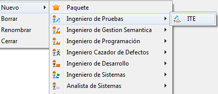
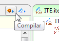
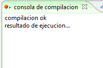
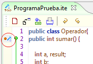
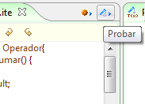
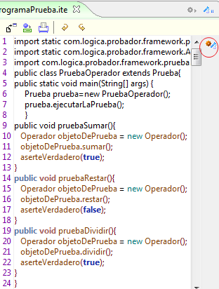
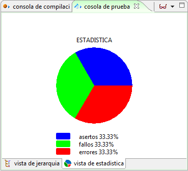

Plugin ITE
El Ambiente de Prueba Integrado ITE (Integrated Test Enviroment, por sus siglas en inglés) es un Framework creado para facilitar la tarea de realizar pruebas unitarias. Agiliza la labor del Ingeniero de pruebas, al reducir el número de pasos que debe hacer para crear y ejecutar una prueba unitaria.
La prueba unitaria es un procedimiento usado para validar que un módulo de código fuente funciona apropiadamente. Una prueba unitaria arroja como resultado un acierto, un error o un fallo.
Creación de un nuevo entorno de Pruebas: Para utilizar el Framework ITE debe crear un nuevo entorno mediante el Plugin ITE. Se selecciona en el Marco de Expresión: Nuevo, Ingeniero de Pruebas, ITE.

Figura 1. Creando un entorno ITE
Barra de herramientas del Plugin Diagrama de Interés:

Figura 2. Barra de herramientas del plugin
Nueva Clase: Seleccione el icono Nuevo para crear una clase vacía, como se muestra en la Figura 3.

Figura 3. Creando una clase
Escriba un nombre para a la nueva clase, dicho nombre será usado también para nombrar el archivo de código fuente. Ej. (Clase_Prueba.java).

Figura 4. Nombrado de la nueva clase
Colosoft genera una nueva clase vacía e inicia el editor de código.

Figura 5. Nueva clase vacía en el editor de código
Importar Archivos de Código: Seleccione el botón Importar.

Figura 6. Importar código desde el editor
Seguidamente se abrirá una ventada de selección de archivos. Importe archivos .java que contengan código fuente.

Figura 7. Seleccionando el archivo de código a importar
Editor: edite o inserte código a modo de texto, el editor de código de Colosoft permite trabajar cómodamente sobre el código resaltando con diferentes colores las palabras claves correspondientes al lenguaje de programación.

Figura 8. Editor de código
Probar el Código: Para comenzar a realizar las pruebas haga clic sobre el botón Compilar ubicado en la esquina superior derecha del marco de expresión del Plugin ITE.

Figura 9. Compilación de código en el entorno
En el Marco de Extensión bajo la pestaña "Consola de Compilación" puede observar el resultado de la compilación. Corrija todos los errores que aquí se presenten antes de proceder con la depuración.

Figura 10. Resultados de la compilación
Prueba Unitaria : Establezca pruebas unitarias para los módulos que desee probar. Para agregar una Prueba haga clic al lado izquierdo de una línea de código que contenga una declaración, aparecerá un marcador rojo a la izquierda del numero de línea.
Agregue tantas pruebas como módulos quiera probar.

Figura 11. Marca para pruebas unitarias
Realizar Pruebas : Con las pruebas unitarias ya establecidas, haga clic sobre el botón Probar para iniciar el proceso.
Figura 12. Ejecución de las pruebas
Colosoft generará una clase de Pruebas a partir de los módulos marcados con pruebas unitarias, dentro de esta clase puede editar los valores de las aserciones a realizar para cada modulo.
Con la clase de pruebas establecida, haga clic en el icono de Paso Dentro, para ir ejecutando una a una las pruebas.

Figura 13. Clase para pruebas unitarias
Visualización de Resultados: Dentro del Marco de Extensión, bajo la pestaña Consola De Prueba y en la vista de Jerarquía, Colosoft mostrará el resultado de cada prueba, la cantidad de Aciertos, Fallos y Errores, y el rastro de estos sobre los resultados de la compilación.

Figura 14. Visualización de resultados en la consola de prueba
Visualización de Estadísticas: Bajo la Vista de Estadística podrá ver un gráfico representativo de los resultados de las pruebas unitarias.

Figura 15. Estadísticas gráficas de las pruebas
Guardar: Guarde los cambios realizados en el código editado sobre el archivo fuente de la clase que actualmente está abierto.

Figura 16. Guardar el código del editor
Imprimir: Imprima el Código fuente desde el editor de código a su impresora, utilizando la opción Imprimir y el diálogo genérico de impresión.

Figura 17. Imprimir el código actual
Deshacer - Rehacer: Deshaga cambios realizados en el código mediante la opción Deshacer, y rehaga cambios previamente descartados mediante la opción Rehacer.

Figura 18. Rehacer los cambios en el editor